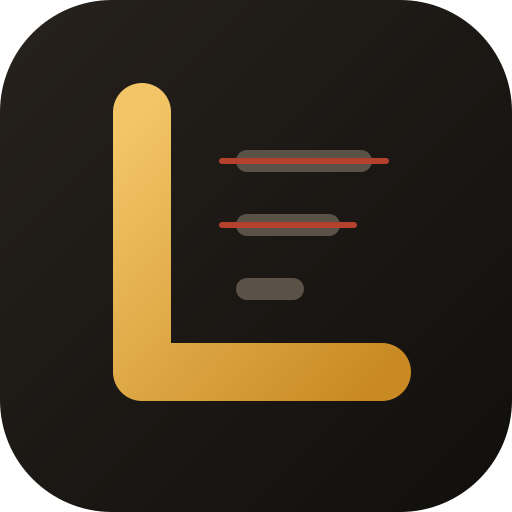

LugasLugas adalah skill untuk Claude dan model lain. Ia membuang basa-basi, klaim kosong, dan struktur kaku dari laporan, skripsi, copy website, dokumentasi kode, naskah video, sampai pamflet. Bahasa Indonesia lebih dulu, lalu Inggris.
Fakta dipertahankan. Yang dibuang hanya kata yang tidak membawa isi.
Runs in your browser. Nothing is uploaded. It marks the phrases Lugas would cut first.
The same rules that run in the checker below, applied step by step to one paragraph.
Six steps, one pass. The point is to stop the ten-retry loop, so it does not offer you three versions to choose between.
The skill is plain Markdown. Anything that reads a system prompt can run it.
git clone https://github.com/bryankwandou/lugas ~/.claude/skills/lugas
Unduh ZIP repo, lalu unggah di Settings → Capabilities → Skills.
Tempel isi SKILL.md, file pola bahasa Anda, genres.md, dan checklist.md ke system prompt. Totalnya sekitar 4.000 token.
/lugas rapikan paragraf ini, terlalu kaku: ...
Lugas memperbaiki mutu tulisan. Ia tidak menjanjikan skor detektor AI atau Turnitin, tidak menyamarkan karya orang lain, tidak menyisipkan typo atau karakter tersembunyi, dan tidak mengarang data atau sitasi. Detektor tidak andal ke dua arah, jadi angka apa pun tidak bisa dijamin secara jujur.